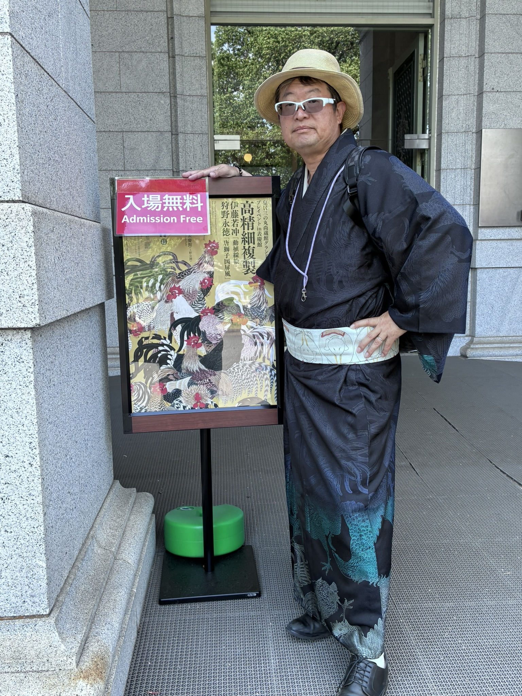

01
Opportunity Discovery
変化を機会に変える

Market Development Strategist
Yoshinao Sato
変化を機会に変え、
価値を未来へつなぐ。
医療、防衛、行政、文化財保存など さまざまな分野で 新しい価値を社会へ届ける 仕組みづくりに取り組んできました。
Years
Companies
Largest Project
価値あるものを未来へつなぐ

日本HP在籍時、 京都国際文化交流財団との 文化財複製展示プロジェクトに携わりました。
デジタル技術によって 文化財を未来へ残し、 より多くの人へ届ける可能性に 大きな魅力を感じました。
2026年、 東京国立博物館で 若冲作品の高精細複製展示を訪れ、 当時の取り組みが今もキヤノンさんの綴プロジェクトとして発展し続けて、 深い喜びを感じました。
価値あるものを未来へつなぐ 市場を見つけ、仕組みを作り、 人を巻き込み実現する
変化を機会に変える
市場を読む
仕組みを設計する
人を巻き込み実現する